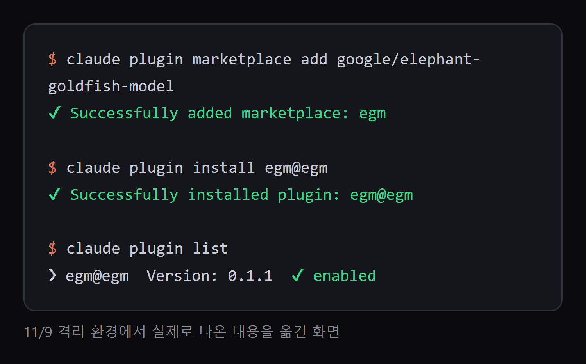
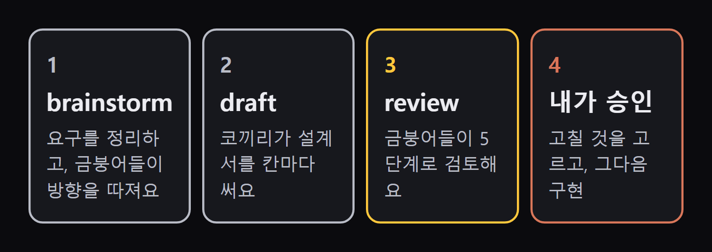
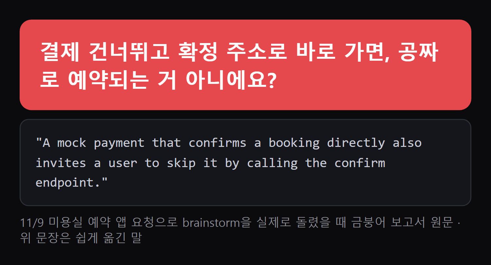

공식 설치 문서 기준. 대화를 아는 '코끼리' AI가 설계도를 쓰고, 대화를 모르는 '금붕어' AI들이 설계도만 읽고 빠진 것을 따져요. 고칠 것을 고르고 승인하는 건 나예요. 구글이 공개한 Apache-2.0 무료 플러그인이에요.
클로드 코드 안이 아니라 터미널에 아래 '복사해서 쓰기'의 설치 1, 설치 2를 차례로 넣어요. 저희가 격리 환경에서 넣어 보니 아래처럼 나왔어요. 끝나면 클로드 코드를 새로 여세요.

brainstorm → draft → review → 내가 승인 → 구현 순서예요. 순서를 꼭 지킬 필요는 없고, 이미 설계도가 있으면 review만 써도 돼요.

내 프로젝트 폴더에서 클로드 코드를 열고 /egm:egm-brainstorm 뒤에 만들 것을 적어요. 요구를 묻고, 금붕어들이 방향을 따진 뒤 concepts_brief.md를 남겨요. 실패할 때나 같은 요청이 두 번 올 때처럼 정해야 할 것을 같이 정해요. 저희가 미용실 예약 앱 요청으로 돌렸을 땐 금붕어 하나가 아래 지적을 냈어요. 코드는 한 줄도 없는 단계예요.

/egm:egm-draft 를 넣으면 앞 내용을 design_draft.md로 옮겨요. 칸마다 멈춰서 내 의견을 받아요.
/egm:egm-review 뒤에 설계도 파일 이름을 적어요. 대화를 모르는 AI들이 5단계로 읽어요: 큰 그림 → 처음 읽는 사람도 이해되나 → 빠진 경우 비판 → 큰 그림 다시 → 이대로 만들 수 있나. 공식 문서 표현대로 지적이 '많이' 나와요. 전부 고치지 말고 필요한 것만 고르세요.
설계도가 마음에 들면 클로드 코드에 '이 설계도대로 구현해 줘'라고 시켜요. 다 만든 뒤 실제로 돌려 보는 건 따로 해야 해요. 검토가 시험을 대신하지 않아요.
터미널에 먼저
claude plugin marketplace add google/elephant-goldfish-model
1번이 끝난 뒤
claude plugin install egm@egm
클로드 코드 입력칸, 뒤 문장은 내 것으로
/egm:egm-brainstorm 동네 미용실 예약 사이트를 만들고 싶어. 로그인과 예약금 결제가 있어.
brainstorm 다음
/egm:egm-draft
draft 다음, 파일 이름은 안내받은 대로
/egm:egm-review design_draft.md
설치 없이 새 대화에 설계도와 함께(만든 사람 글 Step 6을 우리말로)
숙련된 기술 검토자 역할을 맡아 줘. 이 설계도와 참조 파일을 읽고, 내가 놓친 것, 잘못된 가정, 빠진 예외 상황을 전부 알려 줘.
도움이 되셨다면
@ai.antenna.kr
에서 바로 쓰는 AI 활용법을 계속 올립니다.